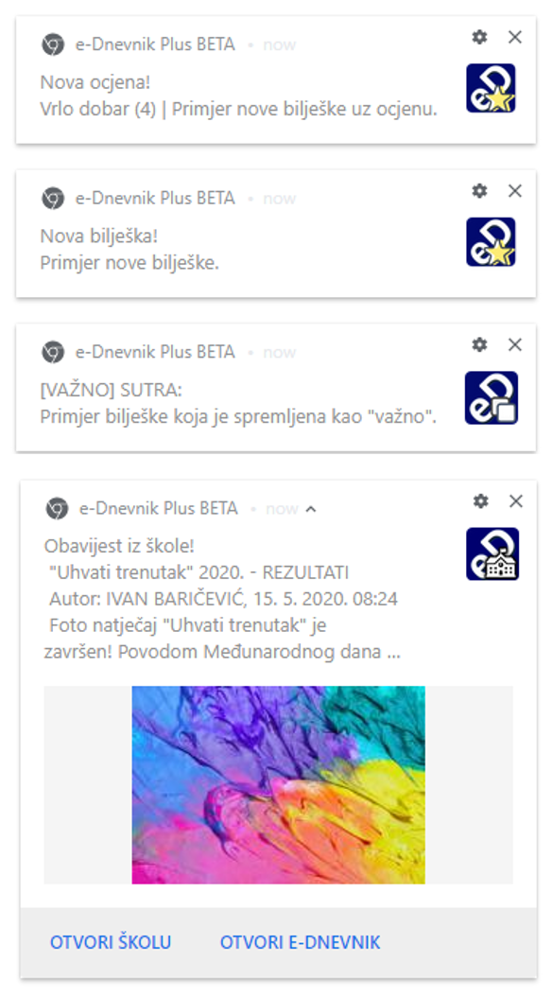

Brži pregled ocjena s posljednjom bilješkom predmeta
«•»
Bolja razredna statistika i unaprijeđena statistika svih razreda
«•»
Razredni raspored sati može se mijenjati i uređivati
«•»
Mogu se primati obavijesti o novim ocjenama i bilješkama
«•»
Nove opcije ikone proširenja: Puni prikaz i Tamni prikaz
VIŠE:
- Brzi pregled ocjena sada je još brži. Ispod tablice ocjena nalazi se zadnja bilješka iz predmeta. Nakon što se tablica zadrži otvorenom, klikom na trokutić, ona zauzima svoje mjesto. Tada tablica ne ide preko drugih predmeta, već se drugi predmeti spuštaju ispod nje.
- U razrednoj statistici ocjena prikazuje se i stupčasti graf s prosjekom i brojem ocjena iz svakog predmeta otvorenog razreda. Graf se može sortirati prema broju ili prosjeku ocjena klikom na legendu.
- Ako je škola unijela razredni raspored sati, proširenje omogućuje mijenjanje i uređivanje rasporeda s automatskim spremanjem. Za brisanje promjena u trenutno otvorenom rasporedu i smjeni, potrebno je kliknuti na kvačicu nakon klika na gumb "Poništi promjene".
- Dvije su nove opcije u prozoru proširenja (ikone), u početku onemogućene:
- Puni prikaz — Spušta visinu stranice do kraja kako bi sav sadržaj bio vidljiv.
- Tamni prikaz — e-Dnevnik u tamnim bojama inspiriran bojama Dark Reader-a.
- Na kartici "Ispiti", u postavkama za obavijesti nalazi se nova opcija: "Obavijesti o novim ocjenama i bilješkama". Kad je opcija omogućena, prikazuju se nove bilješke i ocjene s bilješkama u notifikacijskom prozoru. Ovako izgledaju notifikacije (obavijesti) za Chrome preglednik: 
- Novo: e-Dnevnik Plus za škole! Jednostavno se prijavite na e-Dnevnik Plus s mobitelom, školskom iskaznicom, karticom ili tokenom u vašoj školi pomoću Info-stupova. Prouči više na ednevnik.plus/skole.
- A sad kad znate sve, možete napraviti sljedeće: